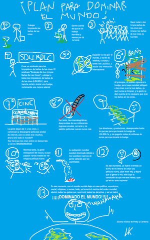

¿Sueñas con dominar el mundo? ¿No sabes por dónde empezar? Esta sencilla guía te ayudará a elaborar un plan infalible.
Planes Básicos
Empieza por estos fáciles planes; aunque no están garantizados, no hay mejor forma para ir adquiriendo experiencia.
Plan A(lbondiga)
Invocar a nuestro señor, el monstruo del espagueti volador para que extermine a todo aquel que se niegue a obedecerte.
- Pros:Nadie osaria ponerse en tu contra.
- Contras:¿Y si...Chuck Norris y los wombats se alian para destruirte? No me gustaria estar en tu piel.

El
mundo te está esperando, ¡no lo dejes para mañana, hostias!
Plan A
Ir acojonando, país por país, a sus jefes de estado con los ejércitos para que nos cedan su terrenito...
- Contras: Está muy visto y sería muy aburrido. Se necesita previa experiencia de 10.000 horas al Risk
Plan B
Inventar un antídoto para el agua del grifo, luego embotellar este veneno haciéndolo pasar por agua mineral y envenenar a la población, después decir que tenemos el antídoto y pedir el mundo a cambio.
- Contras: Nadie bebe agua del grifo, pues no existe remedio para esta muerte segura.
- Anticontra: La estamos vendiendo como agua mineral
 Otra idea a tener en cuenta...
Plan C
Poner discos hipnóticos en los culos de las botellas de Coca Cola, la gente no opondría resistencia y podríamos conquistar en paz.
- Pros: Con la gente hipnotizada podríamos hacer lo que quisiésemos.
- Contras: ¿Quién demonios compra botellas habiendo latas?
- Anticontra: Puedes ponerlos en los culos de las latas.
- Antianticontra: ¿Quién demonios se dedica a mirar los culos de las latas?
- Antiantianticontra: Pues se pone en la parte de arriba.
- Antiantiantianticontra: Se darían cuenta de que están y los quitarían enseguida.
- Antiantiantiantianticontra: Los pegamos con un pegante industrial
- Antiantiantiantiantianticontra: Se darian cuenta de todos modos y botarian la botella
Plan D
Utilizar mensajes subliminales en la red, para que se expandan por todo internet y el mundo.
- Pros: En solo 2 minutos ya tendremos a todos los nerds, frikis y otakus del mundo, dejando solo un 10% de la humanidad libre, que acabará disolviéndose rápidamente.
- Contras: Todos los nerds, frikis y otakus del mudo conocen La Frikipedia, puesto que son frikis, y se enterarían del plan. Además, La Frikipedia dejaría de ser la segura página que es.
Plan D(oraemon)
Provocar una guerra entre los esbirros de Alf y los CAT(de Doraemon)
- pros:Aprovechas la confusion y te haces con el mundo
- contras:Te tienes que decantar por un lado.¿Y si el vando contrario gana? * _*
Plan E
Construir una máquina de crecimiento, con el fin de poseer un tamaño descomunal y asolar las ciudades a tu paso.
- Pros: Nada mejor que destruirlo todo y jugar con la ciudad como lo hace Godzilla.
- Contras: Dado tal tamaño nos convertiríamos en caníbales a causa de lo poca que se hará la alimentación, por lo que nos comeríamos a la humanidad y no tendríamos súbditos que nos adorasen.
- Anticontra: La humanidad se reproduce como conejos.. habra suficiente para el resto de tu vida
- Antianticontra: Si asecinaras a los asiaticos primero........ acabarias con la reproduccion conejal
Plan F
Entrenar a un ejército de monos, consiguiendo de esta forma un ejercito eficiente, fiel y la mar de mono.
- Pros: El sueldo se basaría únicamente en plátanos, lo que favorecerá el aspecto económico drásticamente.
- Contras: Se necesita mucho tiempo para aprender el idioma y adaptarse al olor de las heces. El gasto en plátanos es muy elevado.
Plan G
Falsificar grandes cantidades de dinero, comprar a las grandes empresas y usando ese poder, dominar el mundo y la economía (la gente no es nada sin el dinero, jejeje).
- Pros: La bolsa caería y nos adueñaríamos de todas las empresas, las mas grandes, y luego las pequeñas.
- Contras: Llegará un momento en el que no quedará empresa alguna a la que joder, y nosotros lo que queremos es que haya organismos, entidades etc. sobre los que ejercer presión para que se note que tenemos poder. Además, copiar tanto dinero generaría gastar dinero en maquinaria y papel, y los dueños de las empresas papeleras no son idiotas (bueno, no mucho...).
Plan H
Construir una máquina del tiempo, viajar al pasado con las tecnologías actuales, impresionar a nuestros idiotas antepasados y dominarlos.
- Pros: Podremos aparecer en los libros de historia del futuro, o mejor aún, podríamos evitar que se inventen los libros de historia.
- Contras: Las máquinas del tiempo están lejos de crearse, se han intentado en muchas películas con desastrosos efectos. Alcanzar los 140 km/h solamente funciona bien para volver a 1985, dará problemas para cualquier otro destino temporal. Además, surge la posible paradoja del espacio-tiempo. (Véase al señor tiki taka, Salinas. El animalico de Fry se convirtió así, por arte de Birlibirloque en su propio abuelo).
Plan I
Raptar a todos los presidentes del mundo y obligarles a que nos dejen al mando, o si no, los fusilamos.
- Pros: Todos los presidentes del mundo preferirían sus vidas que las de todo su país, sería pan comido convercerlos con el trato de "el país o tu vida".
- Contras: Con todos los guardias, guardaespaldas, soldados y policías, raptar un presidente es más dificil que raptar a Dios.
Plan J
Usando una maquina criogénica, te congelas por los proximos 6.000 wasillones de años. Luego, despiertas, y ¿que crees? la especie humana se ha extinguido y tu eres amo de todo.
- Pros: Es el modo más sencillo de hacerse con el mundo, solo hay que dormir.
- Contras: No habría nadie a quien gobernar, aparte que no creo que sobrevivas 6000 wasillones de años, antes se destruye el planeta. O también puede ocurrir que antes de esa fecha alguien desconecte la máquina.
Plan K
Usando un super rayo de congelamiento de tiempo, detenemos todo el mundo, y luego matamos a todos los líderes del planeta mientras están congelados.
- Pros: Puedes hacerlo mientras comes un helado y te ries de ellos en su cara.
- Contras:......rayo de congelamiento del tiempo??? No inventes, es mas estúpido que el Plan J. Aparte los lideres muertos se pueden reemplazar con chimpances (y encima, aunque estén vivos, un chimpancé gobierna mucho mejor que ellos).
Plan L
Te tomas el "Super Tónico Del Deseo Estúpido", y pides tener las llaves del infierno, para luego provocar el Apocalipsis.
- Pros: El dulce placer de hacer pedazos el mundo directamente, en vivo, en directo y a todo color.
- Contras: No faltará el idiota que se leerá la Biblia entera y sabrá como destruirte, y con el te destruirias a ti. ¬¬
Plan M
Igual que el tipo que consiguió una casa por un clip, pero sin parar jamás, puedes cambiar una casa mala por una un poco mejor, y una buena por dos malas, cada una de las malas por otra mejor y cada una de estas por otras dos malas, de este modo tu imperio se expendería exponencialmente hasta hacerte con el control del mundo.
- Pros: Dominarás el mundo con un método legal y sin dañar a nadie, así que nadie (ni si quiera tu conciencia) podrá quejarse.
- Contras: Estarías años, siglos, milenios, o incluso meses cambiando y cambiando, por lo que el trabajo lo terminará acabando tu nieto,situación aun asi poco factible debido a que si gastas tu tiempo en llevar acabo esta idiotez dudo mucho que tengas nietos.(Ademas solo basta que un individuo decidiera no hacerte cambios ya la has cagado).
Plan N
Te clonas a ti mismo y luego te consultas a los clones por ideas.
- Pros: Creo que todos confiaríamos en nosotros mismos.
- Contras: La confianza no duraría mucho, ya que, conociéndote a ti mismo, sabes que lo primero que harán los clones será traicionarte y dejarte tirado en alguna parte de Tuvalú.
Plan Ñ
Viajas al pasado y ganas todas las loterías. Con el dinero conseguido dominarías el mundo.
- Pros: Nadie podría denunciarte por haber ganado dinero.
- Contras: A ver si eres capaz de memorizar todos los números de lotería premiados y, encima, encontrarlos.Además de que como tu serías el unico que ganó la lotería, el resto de la gente seria la mar de pobre y no te gustaria dominar enfermos.
- Anticontra: Se hace lo mismo que en Regreso al futuro 2 y ya (se copian los numeros en un libro).
- Antianticontra: Pueden quitarte el libro o plagiarte la idea y la has cagado.
Plan Ñbis
Mejor aún, viajas al año presente+2, te enteras de todos los resultados de todas las jornadas de la Liga del año anterior- el presente+1- los anotas, regresas al año presente y cuando llegue el año presente+1 echas la quiniela todas las semanas y ganas el dinero que necesitas.
- Pros: Es un plan original y en teoría sencillo de llevar a cabo. También se puede aplicar a las carreras en la Zarzuela ahora que el hipódromo está en funcionamiento.
- Contras: Si viajar a un año concreto del futuro es difícil, y sólo a un año concreto, ya no te digo lo que sería hacer estos peligrosos saltos.
Plan O
Crear a grandes cantidades dos tipos de aire. El primero hace que quien lo respire te sirva fielmente y con potente enganche y otro que se renovaría para cuando estén bastante enganchados, luego meterlo en globos o en bombonas de oxigeno , despues de eso ir regalandolo los globos a niños y niñas que traerán mas víctimas, el niño avisa a sus compañeros los compañeros se enganchan llamas a amiguitos y poco a poco hasta hacer un ejercito de niños y niñas, mas tarde de jóvenes a través de hermanos y hermanas de los niños que atraerían a gente y de adultos no, e ir creando asesinaciones y robatorios para luego con el dinero hacerse con el mundo
- Pros: ¿quien sospecharía de que un niño pequeño fuese a cometer un crimen? A los niños les encantan los globos y nadie veria la relacion entre el globo y el niño, y con un ejercito de jóvenes... ¿quien no iria con una jovencita de buen ver?
- Contras: La gente es muy desconfiada hoy en día y muchos no aceptarian.
Plan O(taku)
Ver todos los animes del mundo y aprender sus tacticas de combates para ser el ser mas poderoso sobre la tierra y dominar el mundo facilmente
- Pros:Tendras ventaja sobre los
gillipollas lideres mundiales por su ignorancia sobre esta cultura.
- Contras:La cantidad de otajus y frikis va en aumento por lo cual tendras muchos
gillipollas rivales contra que luchar.
Plan P
Entrenar los poderes mentales latentes de algunos lugares reconditos de nuestra mente y con ello dominar a la gente y hacer que la gente dominada domine a otra gente, que al estar dominados por ti todos estarán bajo tu poder.
- Pros: Al dominar la mente ajena, podrás saber en qué cochinadas piensan tus vecinos y amigos.
- Contras: El intentarlo provoca dolores crónicos en el celebro y esto conlleva a un gran gasto en aspirinas.
Plan Q
Contratar a Chuck Norris y al capitán Palafox para que te ayuden al conquistar el mundo.
- Pros: Palafox y Chuck Norris juntos son tan geniales que la gente se rendiría al instante.
- Contras: Siendo tan geniales, ¿se interesarán en ayudarte?. Además, Chuck Norris ya domina el mundo.
- Contras2:A la minima que le toques los hue... a Palafox, di adios a la luz del sol¬¬
Plan R
Hacer un pacto con el diablo para tener poderes demoníacos.
- Pros: Bastante barato, solo necesitamos un alma.
- Contras: Al no tener alma seremos secuaces del Diablo y eso de que haya alguien por encima de ti no mola...
- Anticontra Agarras el alma de otro.
- Antianticontra Entonces los poderes se los dan al otro.
- Antiantianticontra No exactamente, el diablo sólo quiere un alma a cambio
Plan S
Crear y ponerse un traje que le dé a uno la fuerza, velocidad, agilidad y reflejos de 1000 hombres juntos.
- Pros Serás literalmente y virtualmente imparable.
- Contras El traje en algún momento se saldrá de control y tomará posesión de tu cuerpo, como siempre ocurre con las máquinas poderosas unidas al cuerpo.
- AntiContras El traje de Gordo Hombre Libre funciono, por que el nuestro no?
- AntiAntiContras Porque él estudió MIT y tú no, analfaburro comunista. >:(
Plan T
Usar la televisión como medio para hipnotizar a la gente y tenerlas dominadas por siempre.
- Pros Todos ven tele alguna vez en su vida, y cuando digo todos, es todos!
- Contras Todos ven televisión, y cuando digo todos, nos incluimos nosotros que, al ver televisión, nos hipnotizaríamos a nostros mismos, lo que como siempre, revierte el efecto en toda la gente, que volvería a ser "normal".
- Anticontra Creas unos lentes especiales para ti que impidan la hipnosis
- Antianticontra Los lentes se te pueden perder y con todo el desorden que tienes jamas los vas a encontrar. O simplemente se te rompen
- Antiantianticontra Simplemente no veas la tele.
Plan U
Pagar a todos los programas rosas de todas las cadenas para que hipnotizen a toda la población del mundo y les hagan creer que tú eres el gran señor de la Tierra.
- Pros: En 3 días o menos están bajo tu control aprovechándose del plan T solo que no hay que comprar la cadena entera, es más económico.
- Contras: Hay que pagar a todos los programas y hay para aburrirse, además seguro que en vez de convencerles te ponen verde.
Plan V
Coger todos los fondos de la Frikipedia (y atracar la wilkipedia), para gastarlo todo en condones.
- Pros: Fornicaríamos como monos y todo un dia
- Contras: Ninguno. Bueno... no dominaríamos el mundo y eso... ¡¡Pero fornicaríamos como monos y todo un dia!!
Plan W
Abrir un bar/restaurante/puticlub frente a la moncloa/casablanca, con motivo de la inauguración todos los políticos podrán entrar a beber gratis y ninguno se resistirá. Les pondremos alcohol de garrafón y les meteremos droga en las copas, y luego controlarlos.
- Pros: Siempre es divertido ver borrachos a los políticos.
- Contras: Como somos tan viciosos, nos acabaremos el alcohol y las drogas antes de empezar fiesta.
- Contras2: Los politicos son ya tan estupidos que con la droga los harias mas astutos y inteligentes.
Plan X
Raptar a Bush y hacerse pasar por él.
- Pros: Serías Bush , el dueño del mundo.
- Contras: Serías Bush , el imbécil del mundo. Y encima ahora gobierna Obama. Sería más difícil suplantar su identidad, se necesita mucho tinte negro...
Plan Y
Preguntarle a Chuck Norris si está dentro de su voluntad que dominemos al mundo.
- Pros: Si Chuck Norris aparece en el plan, no hay duda que será algo genial.
- Contras: Chuck Norris no deja que nadie le domine.
Invitar a Monesvol a tomar una copilla, hacerse su amigo, proponerle el dominio mundial, descubrir su punto debil, matarlo y ser el amo del mundo.
- Pros: Es el plan Z. Suena bien... PLAN Z... "Pasemos al plan Z, capitán".
- Contras: el Monesvol no tiene punto debil, solo, lograrias que se cabree y te mande a cultivar achicoria. Además, El Monesvol es ya es el amo del mundo y del universo y puede leer las mentes y te pillaría.
PLan Z 2ª version
Copiar el famoso Plan Z de Bobobo con algun cambio. Estos son los pasos a seguir.
- Usar a Tennosuke como cebo (o a otro ser de cualidades parecidas).
- Abandonarle (y aprovechar para dominar el mundo).
Y ya está.
- Pros: Cómodo y rápido, además de que nos libramos del cebo.
- Contras: Posibilidad ínfima de que no nos de tiempo de dominar el mundo (en dicho caso, llamar a Leticia Sabater).
Plan AA
Hacer un suero de control mental y usarlo en ponches de fiestas infantiles para lavarles el cerebro y que roben a sus padres y a todo el que encuentre para conseguir fondos y conquistar el mundo
- Pros: Nadie sospecharia de un niño y a parte conseguirias mucho dinero facilmente
- Contra: Los padres vigilan mucho a sus niños y no les permitirian
Plan AB
Ser bueno durante toda la vida, mientras estudias todo tipo de artes marciales, para poder ir al cielo cuando te conviertas en muerto. Una vez allí, le das una paliza de muerte a Dios y luego lo encierras en una jaula llena de wombats y ocuparías su puesto.
- Pros: No sólo serías el dueño del mundo. Serías el ser supremo del universo.
- Contras: ¿Ser bueno durante toda la vida? ¿Cómo se hace eso?.Además, la mano derecha de Chuck Norris es Dios, al darse cuenta de ello, te mandaría al infierno con una patada giratoria.
- ¿¿¿COMO OSARIAS AGREDIR AL MONSTRUO DEL ESPAGUETI VOLADOR??? ¡¡¡GLORIA ETERNA A LAS ALBONDIGAS!!!
Plan AC calor
Poner mensajes en las porno para que todos te obedezcan y ser el lord del mundo
- Pros: TODOS ven porno alguna vez en su vida. ¿Verdad que sí, IP anónima?
- Contras: Hay sotopocientosmilgillones videos de rubias cachondas ¿quien veria el nuestro?
Plan AC/DC
Montar el grupo de Heavy Metal más bueno de todos los tiempos y usar al ejercito de heavys que obtendrías para dominar el mundo.
- Pros: Con un ejercito así, todo el mundo se rendiria, y tus heavys seran leales.
- Contras: Si realmente te gusta el heavy, sabes que este grupo ya existe. Si no te gusta, es imposible que los montes...
Plan AD
Crear una máquina para viajar al Mundo de la Fantasía y sacar todos los personajes de Bola de Dragón para que te ayuden a conquistar el mundo. Y si no ve a ver sus variantes...
- Pros: Puede que Pilaf y casi todos los idiotas del GT no sirvan, pero seguro que Frizer, Cel,Bu, Broli y Súper Yishing Long te ayudan encantados. ¿Qué por qué? Porque son muy buena gente.
- Contras: Seguro que Goku, Vegeta-ri-ano, y los demás idiotas serán vencidos, pero... ¿podrás con el unico que jamas murio en toda la saga? El heroe invencible, guapo poderosisimo conocido como mr Satán?
Plan AE
Aliarse con Pinky y Cerebro para idear un plan maestro para nuestro fin.
- Pros: Experiencia y veteranía en el tema.
- Contras: ¿Sabes cómo terminan todos los planes de Cerebro?
Plan AF
Utilizando el truco de la psicología inversa, sentarte en el sofá sin hacer nada y esperar a que el mundo caiga en tus manos.
- Pros: No quemas ni una caloría.
- Contras: La espera puede ser muy larga, y además con los millones de chinos que hay en el mundo mucha suerte hay que tener para que caiga justo en tus manos.
Plan AG
Usando los pros del plan V pero en vez de entre nosotros con ardillas que son mas pequeñas y faciles de manejar.
- Pros: Crearíamos una super raza mutante capaz de luchar contra todo el mundo con la ayuda de los duendes de sangre verde (o azul).
- Contras: Si una ardilla se descontrola en plena fornicación la raza sería superior a nosotros y nos destruiría y no nos tomaría como su señor.
Plan AH
Todo el mundo va al medico alguna vez en su vida, pues en las medicinas meter chips diminutos controlacerebros y asi dominar el mundo.
- Pros: Primero tendriamos a los abueletes y estos les darian las medicinas a sus amigos y a sus nietos, hijos... Serías rápido.
- Contras: Nosostros tambien iriamos al medico por lo cual tomariamos medicinas y con las medicinas los chips controlacerebros, no serviria de nada...
- Anticontra: Con la maquina que controla los chips nos anulamos el nuestro.
- Antianticontra: Pero si dejas la máquina puesta para que al tener el control puesto ya te sirvan, no sabrás dónde estará la máquina.
- Antiantianticontra: Es solo una maquina la que controla todos los chips y estara al lado de nuestro ordenador.
- Antiantiantianticontra: Pero igualmente nos estaría controlando, y acceder a la máquina lo interpretaría como sedición.
Plan AI
Todo el mundo va al medico alguna vez en su vida, pues en las medicinas meter chips controlacerebros y asi dominar el mundo.
- Pros: Primero tendriamos a los abueletes y estos les darian las medicinas a sus amigos y a sus nietos, hijos... Serías rápido.
- Contras: Creo que este plan ya lo he leído antes...
Plan AJ
En clase de tecnología, en el taller, con tus amiguetes, crear un ejercito de super robots asesinos que asusten con la cara, ya vale poner una foto de la Duquesa de Alba.
- Pros: Poder controlar a tu propio ejercito de super robots asesinos.
- Contras: Ser estudiante y tener amiguetes, claro si piensas estas cosas lo mas seguro es que no tengas amiguetes.
Plan AK
Haces un virus súper-potente, lo metes en los ordenadores más potentes del mundo (esos que controlan los disparos de misiles) y ¡hale! ya tienes el mundo a tus pies.
- Pros: Es un sistema muy sofisticado.
- Contras: Lo malo es que no puedes crear un sistema tan sofisticado.
Plan AK 47
Seguir el ejemplo de Kang y Kodos (alienigenas de los Simpsons) y usando su mismo metodo esclavizar al mundo
- Pros: Ellos lo lograron, ¿porque nosotros no?
- Contras: Al comenzar el siguiente capitulo todo volveria a estar como al principio.
Plan AL
Esta navidad le pides a Santa Claus como regalo el mundo.
- Pros: No tienes que mover un dedo y encima puedes joder un poco a Santa.
- Contras: ¿No eres ya mayorcito para creer en Santa Claus?
Plan AM (solo para chicas)
Cásate con Chuck Norris y cuando muera te dejará como herencia el mundo, ya que el ya lo domina.
- Pros: Podrás presumir de ser la novia de Chuck, dios supremo.
- Contras: No te puede dar su herencia si no muere, y Chuck Norris es inmortal.
- Anticontra serias la sengunda al mando...amenos que Chuck Norris no quiera...
Plan A20uñas
Con de las máquinas de traer personajes animé de los planes anteriores traemos a todas las chicas guarras de los doujin,mangas y animés hentai(ecepto las futanari).
Se las llevamos a los líderes mundiales para que les den el curso necesario los grabamos en sus sesiones y como muchas son menores de edad los chantajeamos para que nos den el poder y ya esta luego subimos los videos al internet y los terminamos de hundir.
- Pros: Es genial tiene de todo,chantaje sexo y ciencia ficción.
- Contras:¡¿Para qué usar a esas hermosuras en esos pendejos, si podemos usarlas nosotros?!
Plan AN
- Ya sea aprender tanto de Carlos Slim como de Guillermo Puertas, para conseguir que algún gilipollas, que puedas controlar sin fallo alguno, (ya sea con control mental, sexo o prometiéndole invitarle a la fábrica de Willy Wonka) llegue a ser el hombre más rico del mundo.
- Con la mitad del dinero, comprar, secretamente, el gobierno de Estados Unidos. Esto, haciendo que otro gilipollas que puedas controlar con toda seguridad (con cualquiera de los tres métodos anteriores), quede de candidato para la presidencia. Controlas las elecciones (pero eso si, mejor que como se controlaron las de México en el 2006) y haces muy popular a tu presidente, para que, después de un tiempo pueda hacer, prácticamente, lo que sea con el país.
- Con la otra mitad del dinero, compras, de nuevo, secretamente, el Vaticano. Esto, haciendo que un tercer gilipollas, controlado secretamente con uno de los tres métodos (o los tres, si quieres)llegue a Papa. Gracias a estos no tan sencillos tres pasos, puedes controlar las tres más poderosas potencias del mundo, así controlarías a la mayor parte de la población, y tendrías el poder para matar a quien no quisiera seguir al gilipollas que pusiste de hombre más rico del mundo. Después podrías contratar a los mejores espías (y lavarles el cerebro para que no se revelen) para que te informen de cualquier revolución que se esté dando en secreto. Para asegurarte, siempre puedes seguir lavando el cerebro de todo aquél que esté en tu gabinete de "PODER".
- Para estar seguros, puedes ofrecerle a Chuck Norris el cargo de tu oficial privado de seguridad máxima. Así, nadie, absolutamente NADIE podrá tocarte un pelo. Y claro, a Chuck Norris le encantará, ya que, como siempre hay revueltas, siempre podrá estar dando patadas giratorias a diestra y siniestra.
- Pros: No hay falla alguna.
- Contras: Es posible que ya se esté realizando en éste preciso momento. ;_;
- Antipro: ¿Hacerse el hombre más rico del mundo? ¿Cómo se hace eso?
- Antipro:Mientras Chuck este matando para defenderte puede que hasta te mate a ti
Plan AÑ
Usar una maquina super dimensional para traer a todos los personajes super fuertes de todos los manga del mundo y controlar su cerebro.
- Pros: Puedes ver a tus personajes favoritos en vivo y en directo.
- Contras: ¿Donde hay una maquina asi?
- Antianticontra:¿cuanto costara?
- Antiantianticontra: Robas un banco japonés y asunto arreglado
- Antiantiantianticontra: Claro, le pides por favor a todo los guardias de seguridad que te dejen llegar a la caja, ¿no?
Plan AO
Consigue un grupo de mujeres cuyas vidas no tengan sentido (emo/friki/otaku) y ten todos los hijos que puedas con todas ellas, asi formaras tu propio ejercito de malvados, que cada uno de ellos repita el proceso hasta que finalmente tus decendientes ocupen la mayor parte del mundo y luego destruye a los que no lo sean
- Pros: Este metodo realmente funciona y esta demostrado por la historia, fue inventado originalmente hace 2 mil años por un chino, ya que actualmente sus hijos ocupan un tercio de la poblacion mundial,dentro de 100 años mas su objetivo estara completo
- Contras: Si son otakus/emos/frikis es probables que sean todas feas
Si eres mujer tendras que sufrir el dolor del parto una y otra vez durante toda tu vida, ademas de que tu ejercito sera menor por solo poder tener 1 hijo cada 9 meses
Ademas, de que sirve dominar el mundo cuando eres un viejo decrepito y tienes 900 hijos feos pidiendote el cariño que jamas le diste y 9000 ñetos pidiendote dinero?
Plan AP
Hacer una teoría física muy complicada (así como la teoría de la relatividad) y entonces hacer que todos los físicos te adoren como su dios y así controlarlos, para que después ellos al darle clases en la universidad a los estudiantes les inculquen el amor hacia ti y entonces se volveran tus adeptos, y podrás hacer una pequeña religión y con eso intentar dominar el mundo, y en el peor de los casos a los feligreses.
- Pros: Sería muy interesante ser adorado como Dios.
- Contras: Hacer la teoría complicada es muy difícil, para hacerla debes de ser cuadrapléjico, y además este es un plan para ser adorado como dios, no para dominar al mundo
Crear un sistema operativo superior al de Bill Gates y que cuando llegue al cabo de un tiempo en tus ordenadores haya un fallo tan tremendo e incorregible que deje a la gente inoperativa.
- Pros: La gente se rendiria ante ti muy facilmente puesto que no tendrian opción alguna.
- Contras: Hay mas sistemas operativos a los que recurrir. Bill Gates lo intentó con el Efecto 2000 y fracasó rotundamente. Has de ser rico o tener mucha suerte para que compren tus Sistemas Operativos. Siempre hay un aguafiestas que descubre tu plan.
Plan AP00
Crear un cañón superpotente y mezclarlo con un satélite. Luego desde tu guarida secreta usar el ordenador para dirigir su trayectoria a la Tierra (tú debes estar en otro planeta), y amenazar con apretar el botón rojo que pone "no pulsar", pidiendo el mundo a cambio.
- Pros: Habrás construído el primer cañón superpotente espacial.
- Contras: No sé por que pero tiene un 99% de posibilidades de fallar. Ha sido muy utilizado.
Si se te resbala la mano jodes al mundo y a ti ya que no podras dominarlo,Ademas a que otro puto planeta puedes irte
Plan AP01
Tomar un ejercito de Pixels animarlos y drogarlos con flashonio, luego ponerles controladores de Cerebro y con eso dominar el mundo a base de ataques controlados a varios (todos los) lugares del Mundo Mundial.
- Pros: Tendrias un ejercito de pixels a tu disposicion.
- Contras: Los Pixels animados drogados son inestables, podrian reventar en frente tuyo y matarte.
Plan AP02
Inventas una pocima que te haga invisible, una que te haga volar y otra que te haga miniatura. Asi podrias ir a todos lados y espiar lo que hace la gente. Con esa informacion podrias chantajear a todo el mundo y hacer que hagan lo que quieres. Si no le cuentas a todo el mundo que ven videos de pornografia con ranas.
- Pros: Nadie quiere que le digan a sus amigos que es zoofilico.Además,siendo invisible podrías espiar al sexo opuesto.
- Contras: Si se nos olvida tomar la pocima de invisibilidad y la de volar seriamos muy pequeños y vulnerables, probablemente nos pisarian.
Plan AP03
Contratar a un científico loco para que te haga un ejército de Snoopies gigantes y dominar con ellos el mundo.
- Pros: Cuando la gente los vea pensará que son una cabalgata y, cuando se den cuenta de que son un ejército, será tarde.
- Contras: Chuck Norris los destruiría a todos con su mirada fulminante si decidiera ver la cabalgata.
Plan AP04
Hacer clik en el botón de dominar en mundo ahora, disponible en Windows XP. Ir a Inicio> Configuración> Panel de control> Opciones regionales, de idioma, y de fecha y hora> Elegir dueño del mundo. Hacemos click y se abrirá una ventana que por defecto dirá "Pato Donald". Borramos, y escribimos nuestro nombre y apellido. Luego le damos a "aplicar cambios" y ¡Listo!
- Pros: Una forma sencilla y realizable desde la comodidad del hogar.
- Contras: Necesitarias el Windows Xp original con lo cual aportarias a la conquista de parte de Bill Gates,además que el Xp ya esta desfasado,el Windows Vista tiene bloqueada esa función.
Plan APV2
Reclutar un ejercito de chinos para capturar la capital de los villeros, "Fuerte Apache". Una vez sometida esta ciudad amenazar con matar a todos los negros cabezas si no te entregan el mundo.
- Pros: Los chinos son muchos, asi que no te saldria caro contratar unos cuantos millones. Ademas estaria gustosos de atacar a los villeros porque de seguro los odian.
- Contras: Todos se reirian...no solo los chinos odian a los villeros.
- AntiPro: Solo dominarías Argentina, pero bueno, es un comienzo.
- AntiAntiPro: Matarías a Carlos Tévez, y no verías más buen fútbol.
Plan AP E.X.E.
Tener un hijo y hacerlo vivir toda la vida con los computadores para que aprenda hacks y programación, instalarle el Gugle Earth y decirle que agregue imágenes de supermisiles atómicos apuntando de Rusia a Estados Unidos y super pozos de petroleo, Bush no se contiene, se armará y empezará una guerra mundial "por el bien del mundo". Mientras tanto los colombianos se unen con la guerrilla para vender analgésicos de marihuana a los soldados heridos y con el dinero fabrican 10000000000 armas, luego nos juntamos toda latinoamérica y comunistas en secreto y atacamos a los gringos mientras se ocupan de Rusia conquistando su territorio y poniendo a la guerilla en carne de cañón (dos pájaros de un tiro) cuando las potencias mueran bombardeamos a Japón y listo, mundo conquistado.
- Pros: Los chinos son muchos, y los guerrilleros tambien, es infalible.
- Contras: Imposible unir a todos los latinos, ya lo intentaron.
- AntiPro: ¿Quién quiere destruir Japón con la cantidad de tías anime buenas que hay ahí?
- Otro Contra: Cuando tu hijo sepa todo eso, tú ya serás un viejo decrépito y él un adolescente rebelde. De seguro no te hace caso, y si lo hace, te mata para ser él el dueño del mundo.
Plan AQ
Pedir por favor y de buenas maneras con carita infantil a punto de llorar que te dejen dominar el mundo. Los líderes del mundo dirán "Ooooh, pobreciiiitooooo. Que penita, vamos a dejarle dominar el mundooo".
- Pros: Nadie se resiste a una carita angelical, y además dominas el mundo de forma pacífica, no como esos tiranos malhablados que dicen palabrotas a mansalva.
- Contras: No solo no dominarás el mundo, sino que además te darán una soberana hostia por ser tan imbecil y tan gilipollas.
- Anticontra: Puedes llorar a ver si les remuerde la conciencia y para consolarte te regalan el mundo.
- Antianticontra: ¿Crees que la gente es tan buena?¿o tan imbeciles?
Plan A2ado
crearte un pais flotante y esperar al 2012. la gente se va a suicidar por el fin de la cuenta larga y los pocos que queden se van a morir por la tormenta solar que deja el mundo sin electricidad (esto es verdad mamones, entre el 2011-2012 una tormenta solar quizas choque el polo sur y ahi nos vamos a ver en filitas para salvarnos y encontrar una play5 que funcione, si es que PS no se funde antes). despues esperar 59 años a que los cadaveres se pudran y no quede mas viruela, antrax, virus-t y virus como el de 28 semanas despues en el aire, matar con unas AK-59 a los pocos que queden y listo, el mundo es tuyo thai.
- Pros: La tormente va a venir y es problable que choque contra el polo sur.(sino esperar al 2029 a que caiga el asteroide) y la viruela y otras cosas van a mermar al resto de la humanidad.
- Contras:Esto lo escribi el 2009, supongo que no vas a poder crearte el pais en una petrolifera, ni juntar tantas AK, y si no llegan el asteroide ni la tormenta te matas por el $$$ gasto. y aunque vinieran te podria partir el culo el asteroide, podria sobrevivir mucha gente y te joderia la vida. Los virus duran hasta 80 años en los cadaveres, y talves vengo yo y te hago un planteo (te parto el ojete y yo gobierno el mundo).
Plan AR (Como Ana Rosa)
Postularte como candidata ciudadana de color rosa después de haber sido echada de tu partido, ganar las elecciones, proclamarte gobernadora legítima y empezar una carrera bala que te llevará al dominio del mundo.
- Pros: Nadie puede resistirse al color rosa.
- Contras: El rosa no te va.
Plan AS
Encontrar a un genio de una lámpara mágica que te conceda tres deseos. Uno, dominar el mundo. Dos, la inmortalidad. Tres, tener deseos infinitos, y a partir de ahí lo que quieras, como matar a Chuck Norris.
- Pros: Ni Dios te podrá impedir tus deseos.
- Contras: A ver quien es el guapo que se encuentra una lámpara mágica. Bueno, sí, en Bagdad a lo mejor, pero tal y como están las cosas, es más fácil entrar en una discoteca desnudo con zapatillas deportivas. Además, Chuck Norris no puede morir ni aunque se lo pidas a un genio.
- Antipro: Ademas que con tan solo intentar pedirle al genio que mate a Chuck el genio muere y se van a la mierda tus demas deseos.
- Antiantipro: No se pide matar a chuck norris
Plan SJ JS
Amaestrar a la albondiga viviente al espaguieti volador y a la patata caliente con "El domesticador viviente" ahora tendra un ejercito imbencible de comidas.
- Pros: Son Imbencibles y puedes crear mas y diferentes tipos.
- Contras: Quien querria obedecerte si son tan fuertes.
- AntiContra: Puedes utilizar "El obedecedor viviente".
- AntidelAntiContra: ¡¡¡Que coño es eso y donde se encuentra!!!
Plan Ka-Puf
Hacerlas de maestro de primaria gringa con problemas de esquizofrenia y retraso mental severo, espiar a todos tus alumnos con equipos sofisticados de vigilancia (tipo F.B.I o C.I.A), en esto consumirás todos tus recursos y los ahorros de tus padres (efectos secundarios de fingir retraso y esquizofrenia, ademas de ser profesor de escuela publica gringa), el objetivo de vigilarlos es poner en la mira la mayor cantidad de niños con posibilidades de poseer Padrinos Mágicos, una vez que logres hacerte con uno solo resta pedirle al mundo.
- Pros: Tendrías a un ser mágico capaz de cumplirte cualquier deseo.
- Contras: Loa padrinos mágicos solo te harían alucinar que dominas al mundo.
Plan Olé:
o primero, se ha de descubrir un nuevo planeta habitable, vamos, de esos que venden en el todoa 100. Después, hemos de hacer como Hitler y exterminar a todos los que no sean de raza aria, pero no directamente, si no dejandolos morir (ver mas adelante) (Aunque nosotros no lo seamos, no importa, Hitler tampoco lo era), comprar en el chino una astronave, y una vez sea el apocalipsis por toda la mierda del cambio climatico y eso, vamos, en seguida, montamos en nuestra nave a toda la raza aria, dejando morir en la tierra a todos los que no lo sean.
Para sobrevivir a la espera mientras mueren todas nuestras victimas, aproximaremos la astronave a la luna, donde hay reservas de queso suficientes para sobrevivir en ese periodo de tiempo, y una vez muertos toda la humanidad no aria, regresamos a la tierra, que estará congelada, como en el dia de mañana. Entonces, provocamos con las rubias de las tetas gordas que nos hemos llevado en la astronave, un gran calentamiento entre todos los machos, descongelando asi la tierra y empezando de nuevo la vida.
Nosotros seriamos los grandes salvadores de la humanidad y, hasta Chuck Norris (al que hemos salvado a pesar de no ser de raza aria porque si no...) nos verá como su héroe y nos dejará dominar el mundo.
- Pros: Solo seria un pequeño plan de supervivencia, no habria que hacer nada especial, la tierra iba a acabar congelada de todos modos. No seria excesivamente caro, ya que todo lo que hemos usado era de los chinos y del todo a cien. Chuck Norris no nos destronaria, y la destrucción de la tierra correria a cuenta de ella misma, no tendriamos que hacer nada. además, dispondriamos de un gran harén de rubias de las tetas gordas.
- Contras: Hasta que ocurra eso, nos pueden salir canas, y toda la raza aria que hemos salvado también puede morir de vieja. En el caso de que sobrevivieramos, Chuck Norris nos mandaría a hacer puñetas, porque él es Chuck Norris y no le agradece nada a nadie. Además, Chuck Norris es inmortal, así que aunque el universo se destruya y Dios muera él siempre existirá.
Plan Today
Es el que se usa en la actualidad. Te haces coleguita de 4 jeques, te colocan como cabecilla de EEUU, te inventas que hay terroristas que quieren acabar con la sociedad y así las personas te rogarán que les pongas un chip a todos. Cuando toda la vida se organice en torno a esos chips, bastará con apagarlos para quitarte de en medio a quien no te interese :). Mientras, con la información obtenida de los que viven ciegamente, podrás controlar sus necesidades, y toda su vida.
- Pros: Es genial esto del control mental.
- Contras: ¿Y si no te creen? ¿Y si te descubren? ¿Y si los 4 jeques no quieren ser tus amigos?
Plan AUCH (Qué dolor)
Te disfrazas de americano y rompes hojas del corán en la meca. Luego te disfrazas de moro y le tiras huevos podridos a Bush. Más tarde te disfrazas de ruso y ridiculizas el comunismo en china. Haces diversos atentados de estos corriendo luego y quitándote el disfraz, para que crean que han sido otros. Todos los países se pelearán entre ellos y luego haces lo mismo con los países que queden, hasta que los otros países sean más inferiores que tu ejército.
- Pros: Una tercera guerra mundial puede ser buena para reavivar esta mierda de sociedad de perros y vagos, aparte de que no hay nada más divertido que joder y escapar y ver que no te buscan a ti.
- Contras: Si te pillan antes de que te quites el disfraz, todo a la mierda.
Plan AV (Ya me jodieron)
Atracas la Wikipedia y las reservas del Banco Mundial para comprar todos y cada uno de los paises con el consentimiento de Chuck. Así tendrías todo el mundo dominado.
- Pros: Una forma sencilla de obtener al mundo y a quienes lo habitan.
- Contras: O Fidel. Además, ¿Como rayos asaltar al Banco Mundial?
Plan AW
Consigues un ejército de Wombats salvajes, los pertrechas y los adoctrinas en tu ideolojia.
- Pros: Ni Fidel rechazaría darte Cuba.
- Contras: Pronto uno desertaría y encabezaría una rebelión contra tí con el fin de reproducisre satisfactoriamente (Véase Wombat).
Plan AX
Te transportas a un universo paralelo donde reine el Marleytuguismo y matas al antichuck, descuartizandolo por la polla y llevandola a Chuck.
- Pros:Puedes crear una paradoja cuando quieras y dominar varios universos donde tengan a Chuck Norris por enemigo.
- Contras:Es casi imposible cortarle la polla al antichuck. Encima si se la amputas Chuck no te nombraría amo y señor de ese universo.
Plan AY (Qué daño)
Capturas a los hijos de los presidentes del mundo, les inyectas un virus que vaya matando léntamente tras 196 horas y se contagie por la respiración. Simulas que el secuestro fracasa, desapareces y sueltas a los niños. Con la respiración, contagiarán el virus a los presidentes, los presidentes a sus sucesores y la gente que trabaja para ellos... y luego tú das un golpe de estado y te alzas como amo del mundo.
- Pros: Quizá puedan oponerse a darte el control del mundo y te vayan a atacar, pero dos semanas y ya no hay problema.
- Contras: ¿Cómo puedes impedir que los niños, los presidentes o los militares te lo contagien? Bueno, puedes guardar antídoto, pero ¿qué haces si te lo quitan o descubren una cura?
- Y más raro aún, ¿cómo coño se hace un virus así?
- Otra Contra: Seguro que otro friki ya ha visto Transporter 2 y llamará a Jason Statheman para que te de por donde amargan los pepinos.
- Otra Contra Más: Aunque pudieras crearlo, si ese virus va matando lentamente, con todo el dinero que tienen los presidentes podrán comprar el antídoto a ese virus.
- Por fin un pro: Al menos el dinero nos lo quedaríamos y podríamos comprar el mundo.
- Contra pa joder: Son muy listos los presidentes. Cuando recoges el dinero, un francotirador te disparará, o entrarán los SWAT y te matarán, o en el maletín no habrá dinero sino una bomba.
Plan AY02
Liberas "La Plaga" dejas que se instale en tu cuerpo la mas poderosa, y se la inyectas a la hija del presidente de los EE.UU y se lo inyectas a un monton de españoles en un pueblo del pais vasco.
- Pros: 1: seras inmortal. 2: controlaras a todos los infectados. 3: ya puestos puedes modificarlos geneticamente para que puedan regenerarse 4: los vascos son muy fuertes 5: tu seras su amo por ser el mas fuerte.
- Contras: ¿Exitirá León? Espero que no.
Plan AY03
Mejor aun, creas un virus como el Fox Die. El virus que da el ataque al corazón se lo pones a los líderes del mundo, y el activador se lo pones a alguien que vea a toda esa gente (el rey, por ejemplo). Cuando George Bush hable con el rey, morirá de un ataque al corazón, al igual que cualquier otro lider que le vea.
- Pros: Despues matas al rey y te alzas como amo del mundo.
- Contras: Es posible que, mientras vayan muriendo los lideres, cualquier otro friki que lea esta pagina aproveche y conquiste el mundo y no puedas hacer nada para quitárselo porque ya se ha leído todos estos planes. Además, a ver cómo pollas le pones los virus esos a todos los presidentes.
Plan AZ
Te pones a corretear por todas las calles, berreando y gritando "Quiero dominar el mundooooooooo".
- Pros: Los niños pequeños lo hacen para conseguir caprichos como caramelos. ¿Por qué no va a funcionar eso con nosotros?
- Contras: Se hartarán de oirte y te pegarán un par de hostias para que te calles.
Plan BA (Solo para Chicas)
Te prostituyes y te lo montas con los presidentes y como pago exijes su país.
- Pros: Con lo salidos que son los presidentes, caen seguro.
- Contras: No creo que quieras soportar que te den por culo los presidentes, sobre todo teniendo en cuenta todos los paises que hay. Lo peor es que algunos no son tan calentorros y se negarán a pagarte (e incluso pueden anestesiarte sus matones secretos para hacerlo gratis). Además, ¿dejarias que el negro de Estados Unidos te la metiera?
Plan BB
Creas un ejercito de alienigenas cabeza de pene para tomar el control del planeta.
- Pros: Es simple y barato,los materiales los sacas de algun juego de ciencia o sino te compras el pack "Haga su alienigena en casa" que venden en los infomerciales por un modico precio.
- Contras: No pasara ni semana y media para que un grupo de Depredadores al mando de Chuck Norris ataque la tierra y masacren a tus aliens para luego toda esta guerra sea grabada y posteriormente utilezada en un film de baja calidad lo cual te traera mala fama y caeras en desgracia.
Plan BC
Creas una mafia que haga que en los comercios del pescado regalen bacalao a los minoristas, y que los minoristas vendan el bacalao a diez céntimos el kilo, de forma que las mujeres se den tortazos en las tiendas para conseguir bacalao (y los bomberos tengan que rescatar a alguna anciana medio asfixiada bajo el peso de treinta kilos de bacalao que ella misma haya comprado). Cuando la ciudad esté saturada de bacalao y todos sus habitantes tengan una sed terrible, poner un explosivo en la tubería de distribución de agua. Luego, dirigirte con camiones cisterna llenos de agua y vender agua a un precio muy caro, repetir esta operación en otras ciudades y así hasta reunir muchísimo dinero, y después, lo típico. Comprar países, comprar ejércitos...
- Pros: Si mandan a la policía a detenerte, directamente no les vendes agua y tienen que soltarte.
- Contras: Todavía pueden requisarte los camiones de agua, reparar la tubería, ir a los ríos o esperar a que llueva. Además, no faltará el friki que se haya leído también ese comic de Mortadela y Salchichón y te joda.
Plan BD
Cambias cualquier segunda mitad de un refran por "patada en los cojones" y lo llevas a cabo al pie de la letra. Por ejemplo, "a caballo regalado, patada en los cojones", o "en casa del herrero, patada en los cojones". Asi esterilizas a la humanidad y ya puedes dominarlo todo.
- Pros: Patear cojones es divertido y descojonante. xD
- Contras: Mira, ahi estan Rey Misterio y Batista a un buen arbol arrimados. Quien a buen arbol se arrima... ¿De verdad te atreves? De acuerdo. ¿Donde tienes el testamento?
Plan BE(be dicen las ovejas no?)
Invade Polonialandia vestido de pitufo con sierras mecánicas hiperextensibles de neopreno que podras encontrar en Carrefúr. Los vestidos de pitufo te los haces tu con los cojones. Después crea un ejército de paralíticos polacos que no reciben la ayuda del gobierno y les pagas por matar, pegar, asesinar, hacer graffitis de tu tribu, mantener la estabilidad social de tu imperio(tendra que tener un nombre acojonante como: los malos malotes, aki estamos nostros SA o Declaro la guerra a... y esas cosas). Entonces con tus putos polacos invade poco a poco los demas paises pero sin destruir los mercadonas y bancos. Cuando tengas tol mundo, debes crear una cúpula infraespacial con pegamento Lost-tite para que no llueva mas y matas a toda la humandidad de sed, menos tu que habrás conseguido que el océano atlántico este sin sal y puedas beberla.
- Pros: Eres el puto amo del mundo y ademas tienes la suerte de tener un traje de pitufo
- Contras:Mucho gasto para el ejercito paralítico polaco(sillas de ruedas, alerones para las sillas de ruedas, muletas, tiritas, drogas, jeringas, 2 o incluso 3 millones de bendas y 600000 ak-47.
Plan BF
Consigue los permisos de un autor de un cómic o un webcomic para imprimirlo, y imprimelo en casa. Coloca discos hipnóticos que obliguen a comprar todos tus cómics, y vendelos a 50€. Con el dinero que ganes, compra nuevas impresoras y imprime más cómics, para venderlos a 200 €, y así escalonadamente. Cuando poseas todo el dinero del mundo, compra los países.
- Pros: Conquistas el mundo y la gente te conocerá por tus cómics. ¡Ah! Y tendrás todos los cómics que quieras (imprimir)
- Contras: Cuidado con la tinta de la impresora, que se agota muy pronto y los cartuchos cuestan tanto que te vale más la pena comprar Estados Unidos.
Plan BG
Pon bocinas en sitios estratégicos de mundo como el centro de la ciudad, la casa del presidente, etc. Después de haber conseguido esta difícil tarea enciendelas con reggaeton y dejadla hasta que los líderes y el pueblo no tengan otra opción más que regalarte el mundo
- Pros: El mundo será tuyo, no hay peor castigo que ese.
- Contras: Al tu también estar escuchando reggaeton puedes quedar loco antes que los demás.
Plan BH
Usa programas de chetos y trucos como el Cheat Engine de forma que afecten a la vida real. Obtienes hipervelocidad, inmortalidad, dinero infinito... y muchas más habilidades habilidosas que conseguirán convertirte en el dueño del mundo.
- Pros: Es fácil y divertido.
- Contras: Pero puede banearte un admin y te quedas flotando en el espacio sin poder volver a entrar al mundo.
Plan BI
Modificando el plan AD esta vez usa la máquina para viajar al Mundo de la Fantasía y esta ves sacar todos los personajes de Super smash bros brawl para que te ayuden a conquistar el mundo. Y si no ve a ver sus variantes de peleas...
- Pros: Si le labas el cerebro a Tabubu tendras un ejercito entero quien te obedesca por completo y serian nuestros monos ayudantes.
- Contras: Seguro que Mario, Sonic, Link , Snake y los demás idiotas serán vencidos, pero... ¿podrás con la calienta pollas de Samus?
- Otra contra: Se nesesita tener el Brawl al 100% para hacerlo, porque si no eres un idiota.
Plan BJ
Roba e inyectate el virus T. Haz lo mismo con la plaga (exepto inyectartela) y crea un virus que sea mas fuerte y se combine con los dos anteriores.
- Pros: Si Wesker lo hizo, ¿por qué nosotros no?
- Contras: Ten por seguro que no exista Chris Redfiel, o el plan se arruinará por completo.
- Otro contra: ¿Eres un supercientífico bioquímico doctorado y con un laboratorio supersecreto con infraestructuras justificadas por el gobierno? ¿O eres otro friki que no sabe ni hacer la O con un canuto y se cree que puede hacer un virus en su casa con unos cuantos matraces robáos del insti? Lo imaginaba.
Plan BK
Infesta con un virus mortal a la tierra y envía un mensaje a todos los paises del planeta diciendo que tienes la cura de esa enfermedad, y a cambio pide el mundo.
- Pros: Complicado, pero de seguro una dominacion perfecta.
- Contras: Lo más probable es que tú seas el primer infectado. Además, ¿existe un virus así?
- Antianticontra: Pero al ver tantas muertes se ponen los científicos americanos a investigar como locos y, una vez se curen, se rian de ti en tu
puta misma cara (y te detengan por intento de dominación mundial otra vez).
Plan BL
Busca una fábrica de dinero (de las legales, de las que usa el gobierno) y entra dando tiros a los guardias y a las cámaras, roba el dinero, escapa, compra más y mejores armas y repite la operación varias veces (pero no con el mismo sitio, melón) hasta así obtener mucho dinero, y comprar el mundo.
- Pros: Se rendirán a tus pies.
- Contras: En el momento que entres te acribillarán a tiros, sobre todo en tu primer asalto con una mierda de pistola y balas que se acaban (y ni te digo ya si tenemos en cuenta tu mierda de economía (¿Pa qué te gastas el dinero en porros y en putas?) que seguro que intentarás hacer el primer asalto con un tirachinas).
- Anticontra: Facil, ahi solo debes usar una bomba de gas o algo.
- Antianticontra: Pero con la seguridad que hay te pillarían enseguida.
Plan BN
Consigues un puesto de tacos (comida) y te pones enfrente de la casa blanca, con un cartel enorme que ponga "EL PRESIDENTE COME LOS TACOS GRATIS". Luego envenenas la carne, y cuando el presidente vaya a comer, se muere. Entonces sólo tienes que cruzar la calle y alzarte como nuevo presidente y amo del mundo (Sugerencia: vístete con su ropa).
- Pros: El presidente no se resistiría a unos buenos tacos gratis, y además no tienes que caminar mucho, sólo cruzar la calle.
- Contras: ¿Crees que es tan fácil burlar la seguridad de la casa blanca? Además, antes de que el presidente coma ahí, los guardaespaldas te darán una paliza por poner negocios ilegales frente a la casa blanca (y más si averiguan que los tacos son venenosos).
Plan BM
Desafias a Chuck Norris a una pelea a muerte. Si lo matas todas sus posesiones te perteneceran, por ende te pertenecera el mundo, ya que el ya lo dominó.
- Pros: Solo debes saber pelear a muerte
- Contras: El te matara antes de que puedas pestañear.
- AntiContras: Llevas un cuchillo escondido y cuando nadie vea lo apuñalas
- AntiantiContras: Es resistente al metal
- AntiantiantiContras:Entonces una pistola con silenciador
- AntiantiantiantiContras: Mismo problema
- muchos antiContras: Es inmortal
Plan BB4093jiunihmi9omt9889j94t
Hackea el ordenador de bill gates, el tiene ahi listos los planes de como hacerlo en el archivo formatearpcdeinvasor.bat
- Pros: Esos planes son faciles de encontrar ya que estan en el escritorio.
- Contras: Los planos estan escritos en latin, y ademas en 1337.
Plan fr
Controlar las todas cadenas de televisión del mundo y poner los frutis a todas horas. Amenazar con seguir poniéndolo a menos que te dejen dominar el mundo.
- Pros: Seguro que ceden, es imposible aguantar eso mas de 10 segundos.
- Contras Te volverías loco viéndolo antes de poder decir nada.
Plan B religioso
Haste amigo de monesvol y dile que te ayude
- Pros:Como el es un buen spagheti seguramente te ayudara
- Contras:Te va a traicionar y te lanzara albondigas para el dominar el mundo
Plan Geass
Ve con C.C Y pidele un Geass como el de Lelouch,asi controlaras a la gente,luego ve a una junta de la ONU y controla a todos los lideres mundiales.
- Pros:Como el Geass es invisible,nadie sabra que lo traes a la junta,ademas,es efectivo,sigiloso,te hara ver bien,al terminar tendras el Code y seras
InmoralInmortal Y gobernaras eternamente....Mencione que tendras a C.C?
- Contras:Quien sabe donde esta C.C (seguro en tienda de Pizza hot).Nesesitarias que tu geass fuese exactamente igual..y lo mas probable es que tu termines con un geass para que la gente vaya al baño cuando los miras,Aparte al ser code ya no controlaras a nadie..asi que podrias terminar peor que como empesaste.
- Anti-Contra:Con tener el Code bastaria, ya que serias inmortal y podrias asaltar lugare con cualquier otro e los planes y , por conclusion, dominar al mundo
Plan NeonEvangelico
Liberas a Lilith de la luna negra (Vease..el anime ese de Evangelion) y provocas el tercer impacto,
solo tu viviras y gobernaras lo que queda!!
- Pros:Solo nesesitas bajar al Geofront y tocar a Lilith
- Contras:Seguro te mataran Asuka y Rei antes de que bajes(es eso,o tu te iras de cita con las dos),Aparte Lilith te calcinaria durante el impacto,asi que nesesitaras un traje muy weno para sobrevivir....Y quien quiere un mundo donde ya no hay ni una naranja!
Plan Death Notesco
Sientate mirando a la ventana,espera a que una death note caiga enfrente y la agarras,despues la usas pra matar a todos los lideres,te conviertes en un Kira, y creas un nuevo mundo sin criminales(exepto tu)
- Pros:Es superfacil y solo se nesesita esperar,aparte es bien facil usar la Death Note
- Contras:Seguro te Atrapara L,si no es el,sera N.Puede que pasas una eternidad mirando por la ventana y jamas caiga una death note,mejor usa otro plan
Plan Left 4 Dead
Haz que una pandemia mundial de zombies (usa los metodos basicos como raguaton) donde los zombies no te toquen y dominar el mundo.
- Pros: no habra nadie y digo nadie quen te detenga.
- Contras: Puede haber sovrevivientes.
- ¿No cress que dominar un mundo es dificil? pero ¡¡¡dominar un mundo de ZOMBIES!!! Eres un perfecto Pendejo porque tu seras el primer muerto.
Plan Madara/Tobiesco
Usando el Zukoyomiyomi ya no hay tang y te voy a matar infinito, deberas imprimir tu trasero sharingan en la luna haciendo que todo el mundo te obedezca. Para esto se necesita los animales de chakra con hoyos colas, incluyendo a la Zorro de Nueve Hoyos Colas. El resto es coser y cantar.
- Pros:Es sencillo, rapido y cualquiera puede hacerlo.
- Contras:Necesitarias cantidades industriales de
cigarillos chakra para sacar tu sharingan.
Plan economia mundial
Compras moendas de 1 euro y luego lo vendes a 1 euro diez, con el dinero que consigues compras todos los chinos de España como los ancianos solo pueden comprar hay les obligariamos secuestrar al tito floren. Este ficharia a los malvados mas malvados de la tierra y juntos podriamos hacer un plan para dominar el mundo, pero cuando lo dominemos matas a los demasy te azes el lider mundial
- Pros: Es un plan brillante sin fallos.
- Contras:: Nadie compraría un 1 por un euros 10.
Plan Hentai
Hacer MAS DE 8000 copias de hentais y propagarlos por todo el mundo haciendo que la humanidad se vuelva otaku al servicio del gran señor todopoderoso que destruyo a las tortugas ninja con un solo dedo del pie
Chuck Norris
- Pros: Las pajas ahorrarian leche
- Contras: El hentai es diabolico lo que haria invocar a Satanas y a Satanas 2 haciendo que los mares se traguen la tierra
(Este plan fue creado por Kross pero fue cancelado al ser demasiado pedofilo y sexual haciendo que los usuarios de Frikipedia acabaran con el, ¿de verdad?)
Plan BO (palo en japonés)
Léete la guía para ganar dinero, gana mucho dinero y compra países y ejércitos o compra el mundo.
- Pros: Nadarías en dinero.
- Contras: Te lo quitaría Hacienda y el gobierno.
Plan BP
Imagina que eres el dueño del mundo y compórtate como tal hasta que sea verdad.
- Pros: La gente puede creer que ya eres el amo del mundo y se arrodillarán ante ti.
- Contras: Te distraerías y dejarías de intentar dominar el mundo, y otro friki lo conseguirá de verdad.
Plan BQ
Suicidate.
- Pros: Ya no necesitas dominar el mundo.
- Contras: Queremos dominar el mundo.
Plan BARAK
secuestra a Obama, consigue todas las temporadas de gran hermano y amenazalo que si no te entrega el control de estados unidos(desde ahi, dominar el mundo no sera dificil
) te veras obligado a dejarlo viendo el mal intento de reality.
- Pros: Si es gran hermano, estate seguro de que el control mundial esta asegurado.
- Contras: Es imposible obtener todas las temporadas de Gran hermano(que son 9382765391857365 y contando)
- Contras2: Ningun ser humano es tan malvado como para someter a un ser vivo a tal acto.
- Contras3: Queremos torturarlo, no derretirle las corneas y reventarle el craneo con esta tortura.
- Contras4: La gente negra te odiaria.
Plan Yukikawanakatakamoto
Conviertete en Yukikawanakatakamoto, el mejor garrota del mundo, gana un torneo de Starcraft, ve a tu casa y ganale a cualquiera, lo cual lograras en 1 nanosegundo, haciendo que alteres la realidad y viajes al pasado en la guerra de Vietnam, conduciras al ejercito con tus habilidades de uso de recursos y creacion de bases y con la guerra tendras el definitivo canto de victoria:
"YOU WIN, NOW THE WORLD IS YOURS".
- Pros: No necesitas hacer nada solo
guiar al raton a traves de la pantalla dirigir cada paso de tu armada.
- Contras: Cambiarte el nombre a Yukikawanakatakamoto tardaria varios dias y tu no soportarias estar lejos de tu Nintendo.
- ContraContra: Vale la pena sacrificarse para dominar el mundo.
- RecontraContraContra: No hay enchufes para tu pleiesteiyon en Vietnam. NOOOOOOO!
Nota importante
Todos estos planes son inútiles, porque, al estar puestos en una página que visita todo el mundo, ya habrá hecho alguien uno de los planes antes de que tú empieces. Además, en el caso de que consigas dominar el mundo, vendrá otro adicto a la frikipedia y te destronará con otra tontería de éstas, por no hablar de que Chuck Norris nos puede destronar de una patada giratoria. Sin embargo son una práctica excelente para seguir con los planes avanzados.
Planes avanzados
No intentes ninguno de los planes de esta sección hasta haber dominado los anteriores. Por tu propio bien.
Como dominar el mundo, según MacGyver
Un plan infalible... si eres MacGyver, ¡coño ya!
Materiales
Lo primero es reunir los siguientes elementos imprescindibles:
- 1 Cicle (no importa la marca, depende del país)
- 1 Papa frita marca Lays
- 2 Coca-Colas (una normal y otra light)
- 1 Clip
- 3 Hojas de cuaderno (da lo mismo marca o tamaño, es MacGyver recuerdas?)
- 1 Bolsita de bicarbonato
- Por ultimo una Lupa.
Pasos a seguir
- Escribe panfletos en 2 de las 3 hojas, con anuncios como Se regala piedra filosofal, la 3° hoja guárdala, es importante que las hojas las pongas en un lugar amplio, pues este aviso solo lo verán presidentes, políticos y seres importantes (incluso los delfines).
- Sobre el techo del recinto donde está tu aviso, debes poner colgando una botella de Coca-Cola (previamente debes tomarte la mitad de ambas, y luego juntar el contenido de ambas en una sola botella); y añade el clip, el chicle (usado, y por cierto con la saliva de MacGyver o Chuck Norris) y el bicarbonato, luego de manera inmediata cierra la botella y déjala colgando.
- Pon la hoja de papel sobrante en medio del recinto (justo debajo de nuestra bomba H budokai 7) y ponle la papa frita Lays encima. Cuando todos los seres importantes, ávaros y estúpidos (como son los que gobiernan todo) lleguen por la oferta, verán la papa frita y como son muertos de hambre (de tanto comer dinero), se alzaran ante la pobre papa frita.
- Cuando esté armada la trifulca, con tu lupa apuntas al sol, el cual reflejara un rayo de luz, con el poder de júpiter, y si puedes pídele a Goku que use su bola jenki. Toda esa energía dará de lleno en tu bomba colgante, así el ingrediente secreto de tu chicle, más los químicos altamente peligrosos y fatales de Coca-cola eliminarán a todos esos seres, dándote a ti el poder (si alguien se opone a aquello, solo repite las acciones cuantas veces lo encuentres necesario).
- Pros: Se puede hacer y usas materiales de fácil adquisición
- Contra: NO eres MacGyver (... o lo eres?)
El universo paralelo
Crear un universo paralelo en el que nosotros seamos los dueños del mundo y el universo y todos nos rindan pleitesía. Para eso necesitamos una máquina que cree un portal a un universo paralelo con nuestras características personalizadas. Se necesita lo siguiente:
- Sustancia sustanciosa (se obtiene de la mezcla de sodio y agua).
- Un tarro.
- Metal. Preferíblemente, pedrusconio.
- Cables.
- Uranio enriquecido, neptunio establecido y plutonio empobrecido. Si no tenemos nada de eso, cereales.
- Sierra y herramientas que puedes
robar coger prestadas con permiso del taller de tecnología de tu instituto o una tienda de electrónica.
- Piezas de un ordenador, sin el disco duro. También un monitor, un ratón y un teclado.
- Alcohol de 96º, del de curarse. No bebérselo, que es tóxico.
- Guantes de goma. No, no de Goma, el impeguio de Julio Cesag. De goma de la que se estira y aisla de los calambrazos.
- Cerillas.
- Dinero para comprar todo eso. No te preocupes, siendo soberan@ de tu universo, nadarás en dinero y recuperarás lo que gastes.
Procedimiento
- Abre el tarro, mete algo de sodio y luego echa agua. Agita el tarro y tendrás sustancia sustanciosa.
- Monta las piezas del ordenador como si estuvieran en el ordenador. Conéctalas al monitor, pero todavía no conectes la fuente de alimentación a la corriente. También conecta el ratón y el teclado.
- Con el metal o el pedrusconio, hay que crear una caja grande con un agujero, y un tubo que salga del agujero y se pueda orientar. También es conveniente otros agujeros para que salgan los cables
- Mete sustancia sustanciosa hasta llenar la caja. No te preocupes, el "ordenador" funcionará.
- Cierra la caja y pon el monitor, la alfombrilla, el ratón y el teclado.
- Enchufa la fuente de alimentación.
- La pantalla se encenderá sola, y aparecerá un montón de casillas en blanco en disposición de tabla de Microsoft Office, y debajo un campo de texto.
- En la primera fila, tienes que seleccionar todas las casillas. En la segunda, una sí y una no. En la tercera, una sí y dos no. En la cuarta, una sí y tres que no, y así sucesivamente. Parece una tontería, pero esa es la configuración correcta.
- Ya tenemos un universo configurado para que se pueda respirar en el espacio y ni Dios ni Chuck Norris existan, y todos reconocen que eres el/la indiscutible am@ y señor/a de todo el universo. Ahora escribe en el cuadro de texto (puedes hacerlo con todas las faltas de hortojrafýa que quieras) todo lo que quieras en ese universo nuevo. Por ejemplo, puedes escribir: "Quiero un Chuck Norris que sea poderoso pero que yo sea la única persona que pueda derrotarle, y además con la mirada. También quiero que se puedan plantar las gominolas.". O si eres un poco salidill@, puedes escribir "Quiero que todos los habitantes menos yo sean mujeres/hombres que lo que más les guste es montárselo conmigo.".
- Ahora tenemos que crear el portal al universo. Apunta con el tubo a una pared o al suelo y mete el uranio, el neptunio y/o el plutonio o los cereales y una cerilla encendida dentro, por el tubo. No te preocupes, la sustancia sustanciosa es INflamable, lo que significa que NO se puede quemar.
- Dale una patada a la caja.
- ¿Ha explotado? ¿Algun herido? ¿No? Bien. Si lo has hecho todo bien, el tubo habrá disparado un círculo negro. ESE es el portal al universo paralelo que has creado, y puedes dominar a tu gusto.
- Métete y pruebalo. Puedes andar y respirar por el espacio, y tienes un mapa de todo el universo. Busca La Tierra y haz un poco el Hitler, o lo que sea, para que veas que has creado un mundo que puedes dominar. Si has creado un universo porno, también puedes probarlo el tiempo que quieras.
- ¿Ya lo has probado? ¿Ya has salido? Perfecto. Coge los guantes de goma. Ahora puedes coger el portal del universo paralelo y ponerlo a tu gusto donde quieras (en el aire, dentro del armario...).
- Y ya está. Ya puedes dominar ese universo donde sólo tú puedes entrar (y las personas a las que invites, porque las que no invites no podrán entrar).
- Pros: Tienes un universo paralelo para ti solo.
- Contras: IP anónima no puede construir universos paralelos, porque es tan idiota que algo le fallará seguro.
Plan Loulogio
Este es un plan un tanto complicado, pero efectivo. En el mundo existen unas cosas llamadas bordillos. Es lo que se encuentra en la acera y la carretera. Y si juntamos muchos bordillos podemos hacer una escalera. Así que este es el plan paso por paso:
- Hazte con armas y elimina todas las fábricas de bordillos, incluyendo los Nakamura.
- Destruye todos los bordillos y escaleras de todos lados.
- Al haber dejado de existir los bordillos y las escaleras, la gente hará menos ejercicio y engordará.
- Estando todos gordos menos tú, serás el único atractivo, por lo que podrás aprovechar para tirarte a todas las hembras fértiles que puedas. Debes hacerlo sin condón.
- Al haberlas preñado a todas, tendrás niños de sobra para crear un ejército de pequeños hijos de puta.
- Cuando ya los hayas entrenado a todos, viaja con ellos a Italia e invade El Vaticano.
- Antes, durante o después de la invasión, secuestra al papa Ratzinger Z.
- Tortúralo, amenázalo, hazle lo que sea necesario para convencerlo de que te nombre nuevo dios de la humanidad. O algo.
- Pros: Es el plan diabólico de dominación mundial más elaborado y preciso jamás creado. Es originario de la retorcida mente de Loulogio.
- Contras: El plan es de Loulogio, así que ya lo está haciendo. Lo diseñó para hacerlo él, así que si lo intentas, hará una de estas cosas: que falles intentando eliminar las fábricas, te detengan mientras destruyes bordillos o escaleras, la gente encuentre otra forma de hacer ejercicio y no engordar, las hembras fértiles te rechacen, contraigas sida mientras las preñes, los pequeños hijos de puta no nazcan, se rebelen contra ti, falles la invasión o el papa no te conceda nada.
Consejo
Al terminar de leer esta guia acuerdense de no revelarle el plan secreto a nadie, ya lo hemos experimentado en todos los casos en los que el supervillano esta por dominar el mundo y la caga diciendoselo al heroe medio muerto.
 De: La Frikipedia, la enciclopedia extremadamente seria.
De: La Frikipedia, la enciclopedia extremadamente seria.